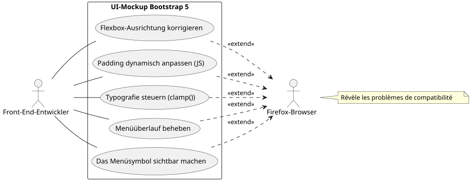
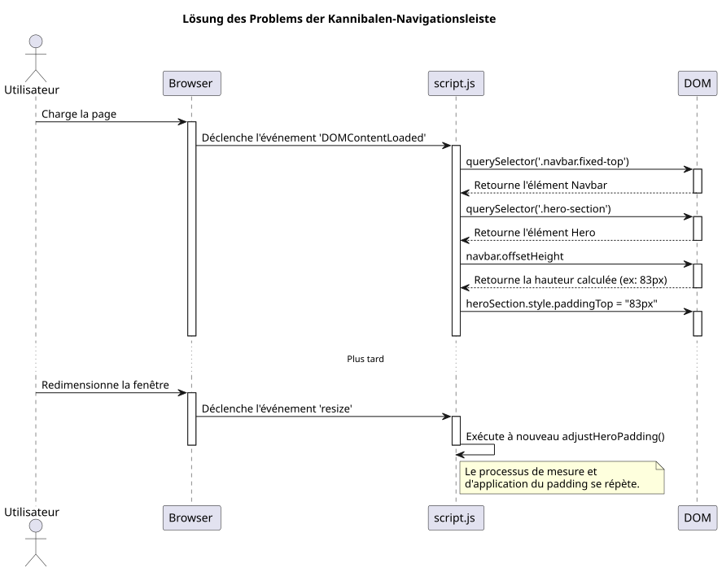
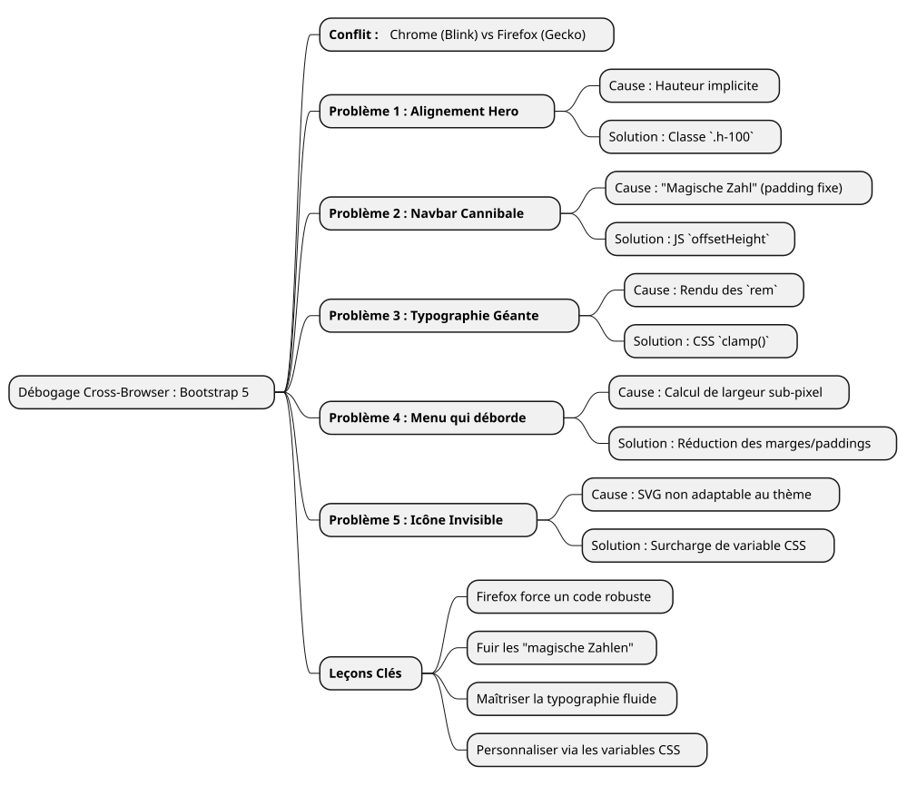

Debugging-Geschichte: Die Launen von Firefox mit Bootstrap 5 zähmen
Publié le 14 July 2025
- Das Schlachtfeld: ein Modell, drei Browser, mehrere Renderings
- Problem 1: Die fliegende Karte des Abschnitts 'Hero'
- Problem 2: Die kannibalistische Navigationsleiste
- Problem 3: Die anarchische Typographie
- Problem 4: Die überlaufende Navigationsleiste
- Problem 5: Das unsichtbare Hamburger-Menü
- Fazit: die Lehren aus einem beharrlichen Debugging
|
Lesezeit : ungefähr 7 Minuten Niveau : Mittelstufe |
In diesem detaillierten Praxisbeispiel werden wir die häufigsten und manchmal frustrierendsten Browser‑Kompatibilitätsprobleme, die bei der Erstellung eines UI‑Mockups mit Bootstrap 5.2 auftreten, auseinandersetzen. Von der Flexbox‑Verwaltung bis zur Subtilität des Schriftarten‑Rendings entdecken Sie unser Debugging‑Parcours, um ein wackliges Design unter Firefox in eine pixel‑perfekte Erfahrung auf allen Browsern zu verwandeln.
Das Schlachtfeld: ein Modell, drei Browser, mehrere Renderings
Jeder Frontend-Entwickler kennt dieses Gefühl. Nach Stunden der Arbeit ist das Layout endlich perfekt. Die Ausrichtungen sind klar, die Typographie ist elegant, die Animationen sind flüssig. Man seufzt zufrieden, bewundert seine Arbeit auf Chrome (oder Brave, oder Edge) und öffnet anschließend, um sicherzugehen, das Projekt auf Firefox. Und dann ist das Drama da. Elemente, die überlaufen, zerbrochene Ausrichtungen, Schriftarten mit wirren Größen… die schöne Harmonie ist entwichen.
Das ist genau das Szenario, mit dem wir konfrontiert waren, als wir eine neue Portfolio-Schnittstelle entwickelt haben. Die Anforderungen waren einfach: eine moderne, responsive Startseite mit einem Theme-Selektor (hell, dunkel und hohem Kontrast), unter Verwendung von vanilla JavaScript und der neuesten Version von Bootstrap 5.2.
Dieser Artikel ist keine Liste von Wundersmitteln. Er ist das Protokoll unserer Debugging‑Sitzung, ein tiefes Eindringen in das „pourquoi“ der Unterschiede im Rendering zwischen den Engines Blink (Chromium, Brave) und Gecko (Firefox), und zeigt, dass robuste und moderne Lösungen immer besser sind als hastig zusammengeflickte Notlösungen.
Use-Case-Diagramm: Der Debugging-Prozess

Problem 1: Die fliegende Karte des Abschnitts 'Hero'
Der erste Fehler war auch der sichtbarste. Der Willkommensbereich ("hero") besteht aus zwei Spalten: links der Haupttitel; rechts eine Vorstellungskarte.
-
Das Symptom:Auf Chrome und Brave waren die beiden Spalten exakt vertikal zentriert. Auf Firefox fiel die rechte Karte unerklärlicherweise unter den linken Text.
-
Die Untersuchung :Der HTML-Code schien jedoch einfach und korrekt zu sein, indem er die Standardklassen von Bootstrap verwendete.
<section id="home" class="hero-section">
<div class="container">
<!-- Cette ligne est la clé du problème -->
<div class="row align-items-center min-vh-100">
<div class="col-lg-6">
<!-- Contenu de gauche -->
</div>
<div class="col-lg-6">
<!-- Carte de droite -->
</div>
</div>
</div>
</section>Unser benutzerdefiniertes CSS für`.hero-section`definierte`display: flex` et align-items: center, und die Klasse`min-vh-100`gab der Zeile tatsächlich eine minimale Höhe (div.row). Dann, warum hat Firefox sich geweigert, die Spalten zu zentrieren ?
-
Die tiefere Ursache:Das ist ein Lehrbeispiel dafür, wie Render-Engines die impliziten Höhen interpretieren. Die`<section>`hatte eine`min-height`, aber kein`height`explizit. Um anzuwenden`align-items-center`innerhalb von`div.row`, Firefox muss die Referenzhöhe dieses Containers kennen. Wie seine Eltern (
div.containeret la `<section>`sie selbst hatten keine Höhestreng, Firefox war verloren. Der Blink-Motor, der nachgiebiger ist, kann die Absicht "erraten" und die Elemente zentrieren. Gecko, treuer zur Spezifikation, tut das nicht. -
Die Lösung:Die Höhe explizit machen. Wir haben den gezwungen`.container` et le `.row`um 100% der Höhe ihres jeweiligen Elternteils einzunehmen, indem du die Hilfsklasse verwendest`h-100`von Bootstrap.
<section id="home" class="hero-section">
<div class="container h-100">
<div class="row align-items-center min-vh-100 h-100">
<!-- ... -->
</div>
</div>
</section>|
Wenn ein`align-items`Flexbox funktioniert nicht wie erwartet auf der vertikalen Achse, überprüfen Sie immer, dass der Container eine Höhe hat`height` ou |
Problem 2: Die kannibalistische Navigationsleiste
-
Einmal die Hero-Sektion ausgerichtet, trat ein weiteres Problem auf: Die Navigationsleiste mit ihrer Klasse`fixed-top`, befand sich über dem Titel. Ein`padding-top: 80px`Es war als Lösung auf den Abschnitt 'Hero' angewendet worden.
-
Das Symptom: Le `padding`war ausreichend auf Chrome, aber nicht auf Firefox, wo der Titel immer teilweise verdeckt war.
-
Die Grundursache :Die Verwendung eines "magische Zahl" (
80px) ist eine sehr schlechte Praxis. Die Höhe eines Elements wie einer Navigationsleiste kann je nach Browser um einige Pixel variieren, aufgrund subtiler Unterschiede im Rendering von Schriftarten, Abständen oder sogar den Einstellungen des Nutzers. Auf einen festen Wert zu verlassen ist das Rezept für ein fragiles Design. -
Die Lösung :Eine dynamische und fehlerfreie Lösung in JavaScript. Wir haben ein kleines Skript geschrieben für:
-
Die tatsächliche Höhe der Navigationsleiste nach dem Rendern der Seite messen.
-
Wenden Sie diese gemessene Höhe an`padding-top`im Abschnitt „Hero“
-
Führen Sie diese Funktion bei jeder Fenstergrößenänderung aus, um sich an Änderungen anzupassen (wie dem Wechsel zum Hamburger‑Menü).
-
document.addEventListener('DOMContentLoaded', function() {
function adjustHeroPadding() {
const navbar = document.querySelector('.navbar.fixed-top');
const heroSection = document.querySelector('.hero-section');
if (navbar && heroSection) {
const navbarHeight = navbar.offsetHeight;
heroSection.style.paddingTop = navbarHeight + 'px';
}
}
// Ajuster au chargement et au redimensionnement
adjustHeroPadding();
window.addEventListener('resize', adjustHeroPadding);
});
Parallel haben wir natürlich die Regel gelöscht.padding-top: 80px;`unserer Datei`styles.css.
Problem 3: Die anarchische Typographie
-
Das Symptom:Auf Firefox war die Schrift des Titels "Entwickler-Trainer…" riesig, fast schockierend, während sie in anderen Browsern harmonisch war.
-
Die tiefere Ursache:Der Titel verwendete eine Klasse`display-4`de Bootstrap. Diese Klassen verwenden responsive Schriftgrößen, oft basierend auf der Einheit`rem`und Medienabfragen. Noch einmal, der Renderalgorithmus von Firefox, kombiniert mit der Schriftart "Inter", führte zu einer deutlich größeren Größenberechnung auf unserer Auflösung von 1920x1080.
-
Die Lösung :Die Kontrolle mit der CSS-Funktion zurückerlangen`clamp()
. Diese Funktion ist eine Revolution für die flüssige Typographie. Sie ermöglicht es, eine Schriftgröße mit drei Werten festzulegen: eine Mindestgröße, eine "bevorzugte" Größe (die sich an die Breite der Ansicht anpasst,`vw), und eine maximale Größe.
.hero-content h1 {
color: var(--text-primary);
line-height: 1.2;
/*
Min: 2rem
Préférée: s'adapte à la vue
Max: 2.5rem (40px)
*/
font-size: clamp(2rem, 1.2rem + 1.5vw, 2.5rem);
}Mit`clamp(), Wir konnten dem Browser sagen: \"Vergrößere die Schrift mit dem Bildschirm, aber überschreite nicht*nie*die Grenze von`2.5rem. Dies hat das Rendering sofort auf allen Browsern harmonisiert, indem es uns die absolute Kontrolle über das endgültige Aussehen gab.
Problem 4: Die überlaufende Navigationsleiste
-
Das Symptom:Auf einem Bildschirm von 1920x1080 wurden die letzten Links des Menüs ("Blog", "Contact") nach rechts vom Bildschirm gedrückt, jedoch nur in Firefox.
-
Die tiefe Ursache:Nach mehreren erfolglosen Versuchen (die Bootstrap-Breakpoints zu ändern von`lg` à
xl`dann`xxl), Wir haben es verstanden. Die Ursache lag nicht in der Bootstrap-Logik, sondern in einer einfachen Breitenberechnung. Auf Firefox ist die Summe der Breiten aller Links, einschließlich ihrer`padding` et `margin`Auf Subpixel genau war es leicht größer als 1920 Pixel. In Chrome war dieser gleiche Betrag leicht geringer. Es fehlten uns einige Pixel. -
Die Lösung:Eine chirurgische Reduzierung der Abstände. Da es keine Frage war, Firefox speziell mit veralteten CSS-Hacks anzuzielen, war die einzige saubere Lösung, einen gemeinsamen Stil zu finden, der überall funktioniert. Deshalb haben wir die äußeren Abstände und den horizontalen Innenabstand jedes Navigationslinks leicht verringert.
/* La version finale, légèrement plus compacte */
.navbar-nav .nav-link {
font-size: 0.9rem; /* 90% de la taille de base */
color: var(--text-primary) !important;
font-weight: 500;
margin: 0 0.2rem;
padding: 0.5rem 0.5rem !important;
border-radius: 0.375rem;
transition: all 0.3s ease;
}Diese Reduktion, quasi unsichtbar für das bloße Auge bei einem einzelnen Element, hat uns insgesamt den notwendigen Platz verschafft, damit alle Links in den Rahmen auf Firefox passen, während das Erscheinungsbild auf anderen Browsern nahezu identisch bleibt.
Problem 5: Das unsichtbare Hamburger-Menü
-
Das Symptom:Im responsiven Modus (Menü "hamburger") war das Menüsymbol auf den Themen "dark" und "high-contrast" unsichtbar.
-
Die tiefere Ursache:Das Symbol des Menüs von Bootstrap 5 ist ein`background-image` (un SVG encodé en URL). Par défaut, la couleur de son trait est foncée, optimisée pour un fond clair. Elle ne s’adapte pas automatiquement au changement de thème.
-
Die Lösung:Verwende die CSS-Variablen von Bootstrap, um das Symbol zu überschreiben. Wir haben ein neues SVG-Symbol definiert, diesmal jedoch mit einem weißen Strich (
#ffffff)", und wir haben sie speziell angewendet, wenn die Themen`dark` ou `high-contrast`sind aktiv.
/* ======================
Fix pour l'icône du menu Burger (Blanc)
====================== */
[data-bs-theme="dark"] .navbar-toggler-icon,
[data-bs-theme="high-contrast"] .navbar-toggler-icon {
--bs-navbar-toggler-icon-bg: url("data:image/svg+xml,%3csvg xmlns='http://www.w3.org/2000/svg' viewBox='0 0 30 30'%3e%3cpath stroke='%23ffffff' stroke-linecap='round' stroke-miterlimit='10' stroke-width='2' d='M4 7h22M4 15h22M4 23h22'/%3e%3c/svg%3e");
}|
Die Anpassung von Bootstrap-Komponenten wie dieser erfolgt zunehmend über das Überschreiben von CSS-Variablen ( |
Fazit: die Lehren aus einem beharrlichen Debugging
Dieser Weg, obwohl er manchmal frustrierend ist, ist reich an Lehren. Jedes gelöste Problem stärkt eine grundlegende Wahrheit der Webentwicklung:Nichts ersetzt einen strengen Multi-Browser-Test.

-
Firefox ist ein Verbündeter:Seine größte Treue zu den CSS-Standards zwingt uns, einen robusteren und weniger mehrdeutigen Code zu schreiben.
-
Vermeiden Sie "magische Zahlen":Die festen Werte (wie`padding-top: 80px`) sind Zeitbomben. Bevorzuge immer dynamische Lösungen (JavaScript) oder relative Lösungen (Flexbox, Grid).
-
Beherrschen Sie Ihre Typografie:Benutzen Sie`clamp()`für die vollständige Kontrolle über die Größe responsiver Schriftarten.
-
Denke in "Komponenten" :Um Bootstrap anzupassen, überschreibe seine CSS-Variablen anstatt die Regeln zu vervielfachen, die das Framework überschreiben.
-
Zielen Sie nicht auf einen Browser:Die Lösung ist fast nie, einen "hack" für einen bestimmten Browser zu machen, sondern einen gemeinsamen Stil zu finden, der überall funktioniert.
Zum Schluss ist das Mockup jetzt robust, vorhersehbar und bereit, in ein Templating-System integriert zu werden. Jeder behobene Fehler war kein Misserfolg, sondern ein Schritt hin zu einem qualitativ besseren Code.